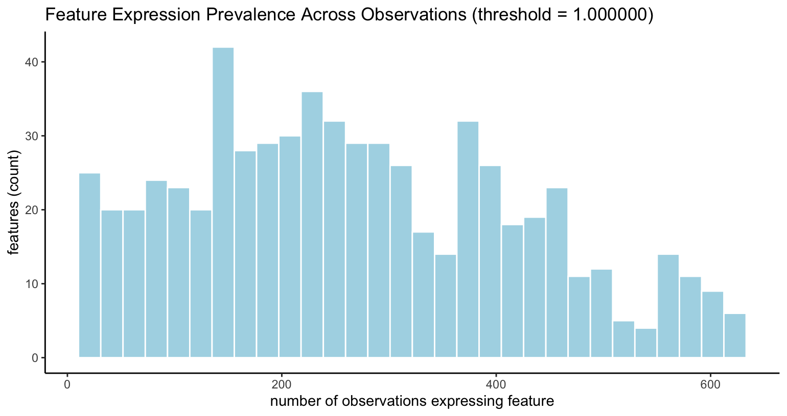
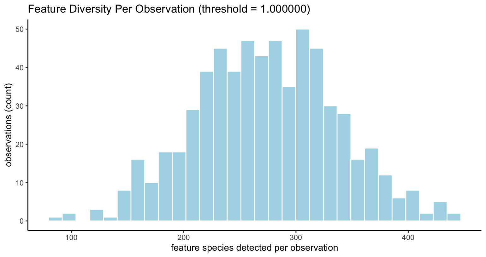
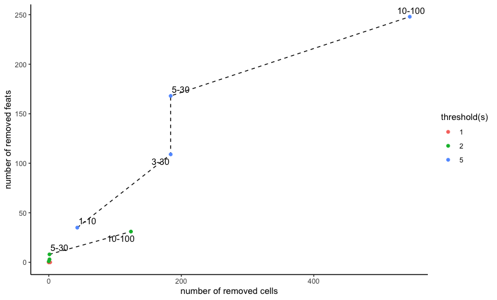
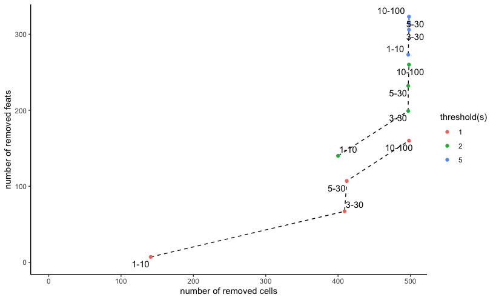

# Ensure Giotto Suite is installed.
if(!"Giotto" %in% installed.packages()) {
pak::pkg_install("giotto-suite/Giotto")
}
# Ensure GiottoData is installed.
if(!"GiottoData" %in% installed.packages()) {
pak::pkg_install("giotto-suite/GiottoData")
}
library(Giotto)1 Overview
Data filtering is often the first step of analyzing aggregated data, where expression values have already been calculated for a particular spatial unit (e.g. cell, nucleus, hexbin).
Why Filter
Filtering can help remove low-quality observations that would otherwise introduce technical noise. For example, the presence of observations with lower numbers of features detected than other good quality observations can influence the clustering into grouping more by total expression detected than by actual content. Observations are also low quality if they show signs of being poor representatives of the biological activity being studied. Some examples are cells that are actively dying (high mitochondrial gene expression) or observations that are actually doublets (in the case of single cell RNA-seq).
Removing these sources of non-relevant variation will be helpful for downstream analyses and improve biological signal relative to technical noise.
Spatial Considerations
That said, while filtering is beneficial for expression-space analyses, with spatial data, even poor data represents a spatial node. You can imagine that removing a poor quality cell from a spatial network would damage our understanding of spatial niche makeup and cell-cell crosstalk. To best deal with these situations, keeping track of the poor quality cells without fully removing them from the dataset is a safer approach. It is also possble to attempt to rescue these poor quality cells with downstream imputation steps.
2 Visualize Distribution of the Expression Data
When deciding how to filter the dataset, it can be helpful to first
get an overview of how the data looks. In addition to spatially
examining the raw expression values through spatPlot2D(),
you can also look at the expression distribution through
filterDistributions().
The main params are:
-
detection- either"feats"(default) or"cells"for whether the statistics should be calculated across features or cells/observations. -
method- the statistic calculated when plotting. One of:-
"threshold"- number of features that cross theexpression_threshold(this is the default). -
"sum"- calculate sum of the features across adetectiontype. -
"mean"- calculate mean of the features across adetectiontype.
-
Effectively, there are 6 sets of information we can visualize with this function.
detection |
method |
Plot Description |
|---|---|---|
"feats" |
"threshold" |
Feature presence across observations, when feature
>= expression_threshold
|
"feats" |
"sum" |
Overall feature expression magnitude in the dataset |
"feats" |
"mean" |
Mean of values per feature in the dataset |
"cells" |
"threshold" |
Diversity of features per observation, when features
>= expression_threshold
|
"cells" |
"sum" |
Total sum of feature values per observation |
"cells" |
"mean" |
Mean of feature values per observation |
Other key params are:
-
expression_threshold- only used withmethod = "threshold". Minimal number of counts to consider a feature expressed for that observation. -
plot_type- visualize as either a histogram ("histogram", this is the default) or violinplot ("violin") -
scale_axis- x axis transform.NULLprovides no scaling,"log2"will set to log2 scaling etc.
# load example mini visium mouse brain dataset (634 features, 624 observations)
visium <- GiottoData::loadGiottoMini("visium")
filterDistributions(visium, detection = "feats", method = "threshold")
filterDistributions(visium, detection = "cells", method = "threshold")
3 Filtering on Expression Counts
Filtering the giotto object is performed with
filterGiotto(). This function checks that features and
observations/cells are passing three statistical filters, expressed as
the three function parameters below:
-
expression_threshold- The minimal number of counts for a particular feature to be considered as expressed for a particular observation/cell. This works with the 2nd and 3rd filters. -
feat_det_in_min_cells- The number of observations/cells within which a particular feature is expressed for it to be kept. -
min_det_feats_per_cell- The minimal number of features expressed within an observation/cell for that observation to be kept. This is done based on the set of features surviving the 2nd filter.
Filter (1) defines what counts as expressed at the observation-feature level.
Filter (2) focuses on feature prevalence across cells - ensuring features are only kept if they’re expressed in enough cells. Since high-throughput data may often have dropouts or even miscalls and is most useful for relative comparisons and group gene signatures, removing extremely rare features is helpful for downstream steps.
Filter (3) deals with cell quality - keeping only cells that express a minimum number of feature species (after applying the second filter). This helps reduce the influence that poor data acquisition has on the downstream steps.
3.1 Previewing Filter Settings
{Giotto} provides filterCombinations() as a tool for
comparing the effects of filterGiotto() operations with
different settings.
filterCombinations() can be run to visualize the number
of features and observations that are filtered out with specified
combinations of expression_threshold,
feat_det_in_min_cells, and
min_det_feats_per_cell.
For every expression_threshold value supplied, a new
line will be drawn since that parameter affects the functioning of the
two others. feat_det_in_min_cells and
min_det_feats_per_cell are then provided in pairs to be
tested per expression_threshold.
# load example mini visium mouse brain dataset (634 features, 624 observations)
visium <- GiottoData::loadGiottoMini("visium")
filterCombinations(visium,
expression_thresholds = c(1,2,5),
feat_det_in_min_cells = c(1, 3, 5, 10),
min_det_feats_per_cell = c(10, 30, 30, 100)
)
Mini Visium dataset filterCombinations() with 3 expression
thresholds and 4 pairs of feature and observation cutoff filters
From this we can see that with an expression_threshold
of 1, none of the feat_det_in_min_cells and
min_det_feats_per_cell combinations remove many
observations or features. Increasing the threshold to 2 and then 3 shows
much more dramatic effects in number of features and observations
removed. This helps the user make an informed decision about what
filtering settings to apply to the data.
Keep in mind that this example is performed with a subset (both features and observations-wise) of a 10X Visium mouse brain dataset, where the semi-bulk and sequencing nature of the data acquisition tends to result in more feature detections per observation relative to higher resolution or imaging-based spatial transcriptomic methods.
# load example mini MERSCOPE mouse brain dataset (337 features, 498 observations)
merscope <- GiottoData::loadGiottoMini("vizgen")
filterCombinations(merscope,
expression_thresholds = c(1,2,5),
feat_det_in_min_cells = c(1, 3, 5, 10),
min_det_feats_per_cell = c(10, 30, 30, 100)
)
Mini Vizgen (MERSCOPE) dataset filterCombinations() with
same 3 expression thresholds and 4 pairs of feature and observation
cutoff filters
The same settings applied to a mini MERSCOPE mouse brain dataset
shows much more dramatic effects with even the
expression_threshold of 1, reflecting the more spatially
resolved, but usually lower counts per observation nature of this
data.
The filtering cutoffs employed should be adapted to the technology and tissue being studied.
3.2 Subset Removal of Filtered Cells
The default functioning of filterGiotto() is to find the
cells not meeting the three filters and then remove them from the
dataset.
out <- filterGiotto(merscope,
expression_threshold = 1,
feat_det_in_min_cells = 3,
min_det_feats_per_cell = 10
)
# Number of cells removed: 141 out of 498
# Number of feats removed: 67 out of 337 3.3 Tag Filtered Cells Without Removal
However, since spatial data is also important in the spatial
relationships, fully removing cells will leave artificial holes in the
tissue and our understanding of the biology. We can instead apply a tag
encoding the results of the filterGiotto() operation in the
cell and/or feature metadata. Cells or features to keep with be tagged
with a value of 1. Ones to remove will be tagged with 0. By default,
these will be written to new columns called "tag".
out <- filterGiotto(merscope,
expression_threshold = 1,
feat_det_in_min_cells = 3,
min_det_feats_per_cell = 10,
tag_cells = TRUE,
tag_feats = TRUE
# tag_cell_name
# tag_feats_name
)
# Number of cells tagged: 141 out of 498
# Number of feats tagged: 67 out of 337Params tag_cell_name and tag_feats_name can
also be added which can be used to set the name of the column in the
cell or feature metadata to write the tags to.
pDataDT(out) # display cell metadata cell_ID tag
<char> <num>
1: 40951783403982682273285375368232495429 1
2: 240649020551054330404932383065726870513 1
3: 274176126496863898679934791272921588227 0
4: 323754550002953984063006506310071917306 0
5: 87260224659312905497866017323180367450 0
---
494: 264234489423886906860498828392801290668 1
495: 328891726607418454659643302361160567789 0
496: 6380671372744430258754116433861320161 0
497: 75286702783716447443887872812098770697 0
498: 9677424102111816817518421117250891895 0
fDataDT(out) # display feature metadata feat_ID tag
<char> <num>
1: Mlc1 0
2: Gprc5b 0
3: Gfap 0
4: Ednrb 0
5: Sox9 0
---
333: Gpr101 0
334: Slc17a8 1
335: Adgrf4 1
336: Epha2 1
337: Blank-139 14 Filtering on Metadata Values
Depending on the type of data you have, there are many other quality
metrics that can be used to filter. For single cell RNA-seq data, for
example, you could find the doublet score (e.g. via
doScrubletDetect()) and perform a filter based on the score
value. You could calculate a mitochondrial gene percentage calculation
and remove cells with percentages that are deemed too high.
Placing these values in the cell metadata is a convenient way to
organize this attribute information, and they can be used to subset the
giotto object as well.
To set up an arbitrary example, we can find the percentage of blank probes detected per cell in the merscope mini dataset and then filter on it.
# get the names of blank probes used (note that normally, negative probes should be in a separate feature type from the main data to be analyzed)
blank_probes <- grep("Blank_*", rownames(merscope), value = TRUE)
merscope <- addFeatsPerc(merscope,
feats = blank_probes,
vector_name = "neg_prbs",
expression_values = "raw"
)
# note that some cells have a total expression of 0 and report NaN for `neg_prbs` percentage.
merscope$neg_prbs[is.na(merscope$neg_prbs)] <- 0 # assign 0 to NaN values.
dim(merscope) # starting: 337 498
prb_subset <- subset(merscope, subset = neg_prbs <= 3)
dim(prb_subset) # end: 337 483This can also be done in a tagging approach by putting the results into the metadata.
# we can use sapply to ignore NA values
merscope$prb_subset <- sapply(merscope$neg_prbs <= 3, isFALSE)
table(merscope$prb_subset)FALSE TRUE
483 15 R version 4.4.1 (2024-06-14)
Platform: aarch64-apple-darwin20
Running under: macOS 15.3.1
Matrix products: default
BLAS: /System/Library/Frameworks/Accelerate.framework/Versions/A/Frameworks/vecLib.framework/Versions/A/libBLAS.dylib
LAPACK: /Library/Frameworks/R.framework/Versions/4.4-arm64/Resources/lib/libRlapack.dylib; LAPACK version 3.12.0
locale:
[1] en_US.UTF-8/en_US.UTF-8/en_US.UTF-8/C/en_US.UTF-8/en_US.UTF-8
time zone: America/New_York
tzcode source: internal
attached base packages:
[1] stats graphics grDevices utils datasets methods base
other attached packages:
[1] Giotto_4.2.1 testthat_3.2.1.1 GiottoClass_0.4.7
loaded via a namespace (and not attached):
[1] rstudioapi_0.16.0 jsonlite_1.8.9 magrittr_2.0.3
[4] magick_2.8.5 farver_2.1.2 rmarkdown_2.29
[7] fs_1.6.5 zlibbioc_1.50.0 vctrs_0.6.5
[10] memoise_2.0.1 GiottoUtils_0.2.4 dbMatrix_0.0.0.9023
[13] base64enc_0.1-3 terra_1.8-29 htmltools_0.5.8.1
[16] S4Arrays_1.4.0 usethis_2.2.3 SparseArray_1.4.1
[19] htmlwidgets_1.6.4 desc_1.4.3 plotly_4.10.4
[22] cachem_1.1.0 igraph_2.1.1 mime_0.12
[25] lifecycle_1.0.4 pkgconfig_2.0.3 rsvd_1.0.5
[28] Matrix_1.7-0 R6_2.5.1 fastmap_1.2.0
[31] GenomeInfoDbData_1.2.12 MatrixGenerics_1.16.0 shiny_1.9.1
[34] digest_0.6.37 colorspace_2.1-1 S4Vectors_0.42.0
[37] rprojroot_2.0.4 irlba_2.3.5.1 pkgload_1.3.4
[40] GenomicRanges_1.56.0 beachmat_2.20.0 labeling_0.4.3
[43] fansi_1.0.6 httr_1.4.7 polyclip_1.10-7
[46] abind_1.4-8 compiler_4.4.1 remotes_2.5.0
[49] withr_3.0.2 backports_1.5.0 BiocParallel_1.38.0
[52] viridis_0.6.5 pkgbuild_1.4.4 ggforce_0.4.2
[55] MASS_7.3-60.2 DelayedArray_0.30.0 sessioninfo_1.2.2
[58] rjson_0.2.21 gtools_3.9.5 GiottoVisuals_0.2.12
[61] tools_4.4.1 httpuv_1.6.15 glue_1.8.0
[64] dbscan_1.2-0 promises_1.3.0 grid_4.4.1
[67] checkmate_2.3.2 generics_0.1.3 gtable_0.3.6
[70] tidyr_1.3.1 data.table_1.16.2 ScaledMatrix_1.12.0
[73] BiocSingular_1.20.0 tidygraph_1.3.1 utf8_1.2.4
[76] XVector_0.44.0 BiocGenerics_0.50.0 ggrepel_0.9.6
[79] pillar_1.9.0 stringr_1.5.1 later_1.3.2
[82] dplyr_1.1.4 tweenr_2.0.3 lattice_0.22-6
[85] tidyselect_1.2.1 SingleCellExperiment_1.26.0 miniUI_0.1.1.1
[88] knitr_1.49 gridExtra_2.3 IRanges_2.38.0
[91] SummarizedExperiment_1.34.0 scattermore_1.2 stats4_4.4.1
[94] xfun_0.49 graphlayouts_1.1.1 Biobase_2.64.0
[97] devtools_2.4.5 brio_1.1.5 matrixStats_1.4.1
[100] stringi_1.8.4 UCSC.utils_1.0.0 lazyeval_0.2.2
[103] yaml_2.3.10 evaluate_1.0.1 codetools_0.2-20
[106] ggraph_2.2.1 GiottoData_0.2.15 tibble_3.2.1
[109] colorRamp2_0.1.0 cli_3.6.3 uwot_0.2.2
[112] xtable_1.8-4 reticulate_1.39.0 munsell_0.5.1
[115] Rcpp_1.0.13-1 GenomeInfoDb_1.40.0 png_0.1-8
[118] parallel_4.4.1 ellipsis_0.3.2 rgl_1.3.1
[121] ggplot2_3.5.1 profvis_0.3.8 urlchecker_1.0.1
[124] sparseMatrixStats_1.16.0 SpatialExperiment_1.14.0 viridisLite_0.4.2
[127] scales_1.3.0 purrr_1.0.2 crayon_1.5.3
[130] rlang_1.1.4 cowplot_1.1.3